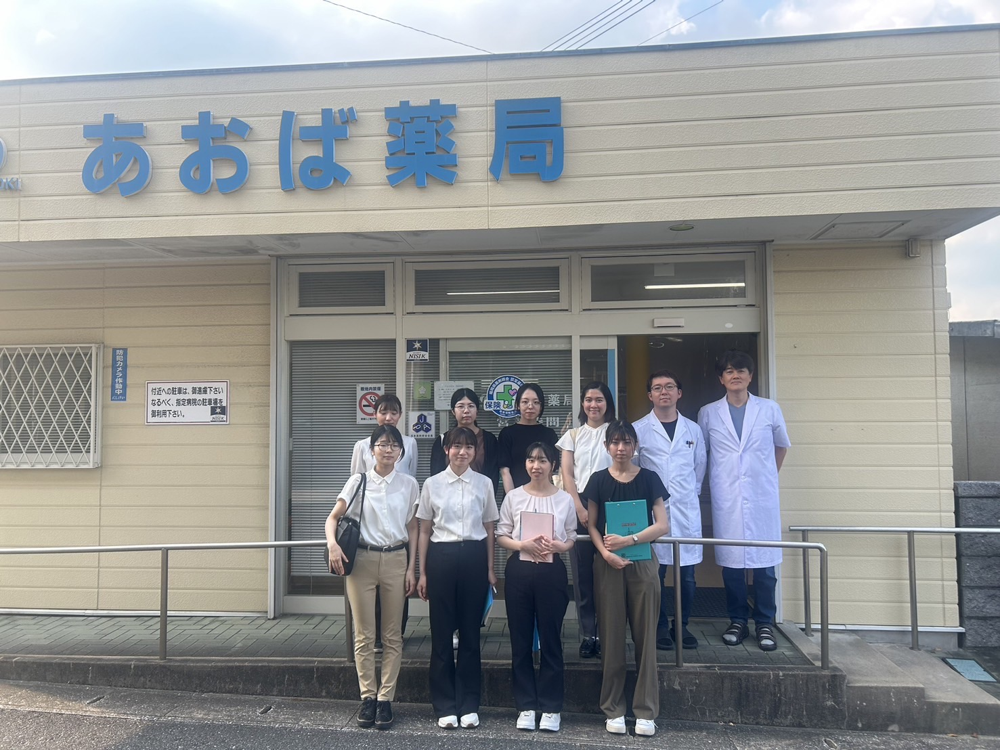
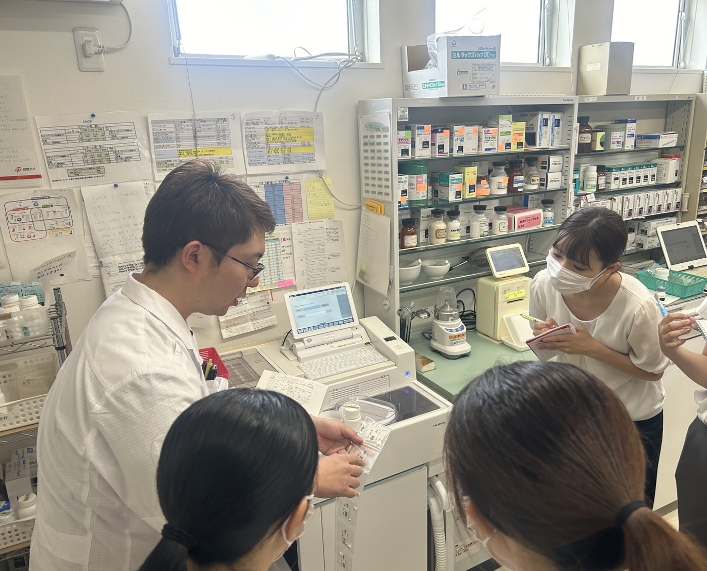

あおば薬局
9月5日あおば薬局に行きました！私達はこのあおば薬局で薬剤師としての一般業務から患者にあったお薬の渡し方、自宅や老人ホームに訪問する在宅医療などに調剤薬局ならではのことについてたくさん学ばせていただきました！また、自然が身近にある田川市でできる釣りやそば打ちなど地元の人たちとコミュニケーションを取るために調剤以外での活動をたくさん行なっていることを知り、あおば薬局さんは地域の方々に寄り添うあたたかい調剤薬局さんなんだなと思いました☺

